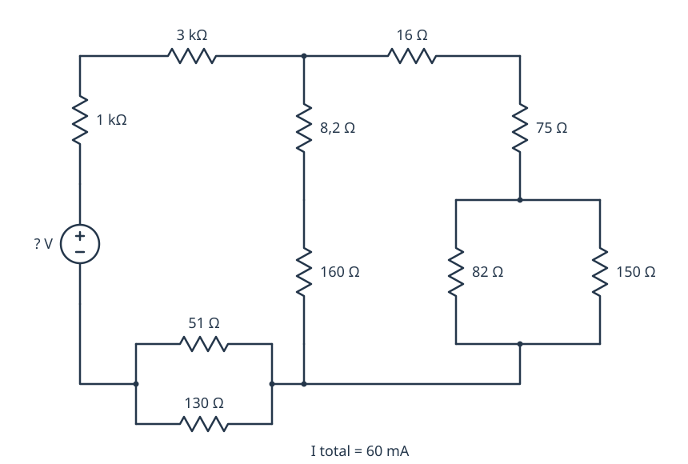
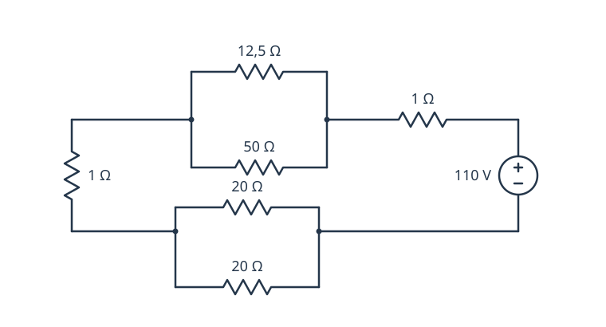
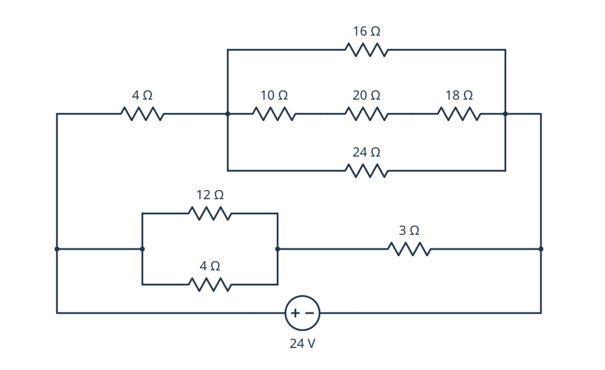
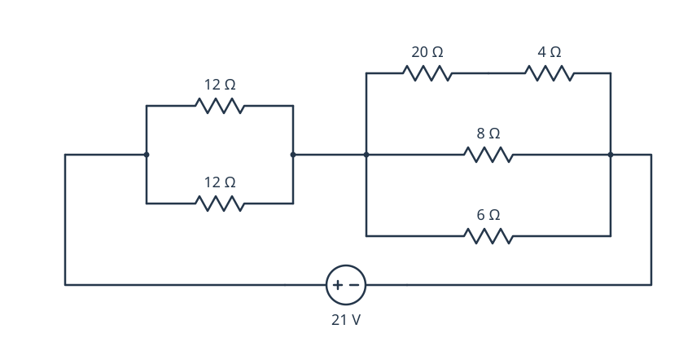
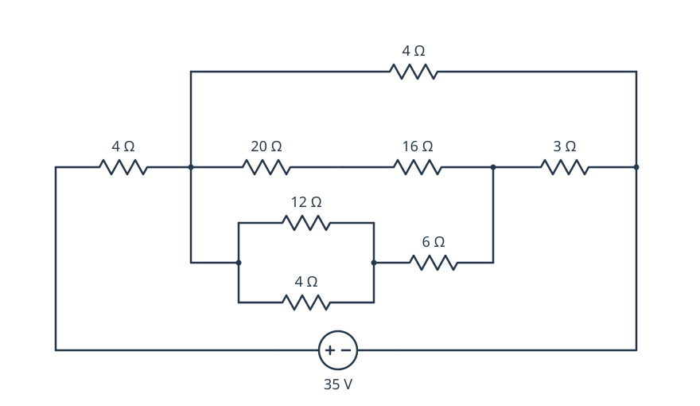

0221 · Montaje y mantenimiento de equipo · Tema 1
Boletín 2 · Circuitos mixtos
Boletín 2 · Circuitos mixtos
Los cinco circuitos del boletín manuscrito, redibujados conservando los valores y las conexiones. Calcula la resistencia equivalente antes de aplicar la Ley de Ohm a la fuente.
En móvil puedes desplazar los esquemas horizontalmente. Ábrelos ampliados para verlos a mayor tamaño o descarga el SVG para imprimirlo sin pérdida de calidad.
1. Determina el voltaje de la fuente.
La corriente total suministrada por la fuente es de 60 mA. Ten en cuenta que dos resistencias están expresadas en kiloohmios.


2. Calcula la corriente suministrada por la fuente de 110 V.


3. Calcula la corriente suministrada por la fuente de 24 V.


4. Calcula la intensidad suministrada por la fuente de 21 V.


5. Calcula la intensidad suministrada por la fuente de 35 V.
